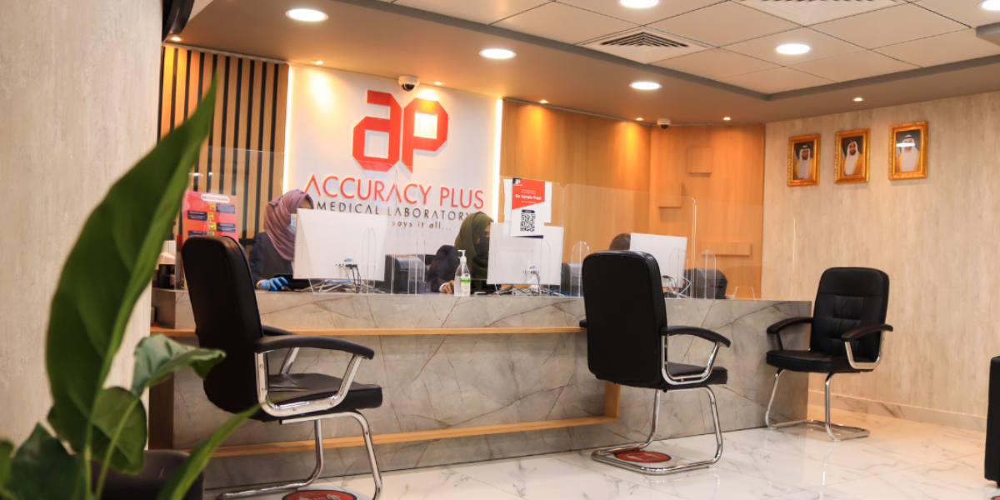
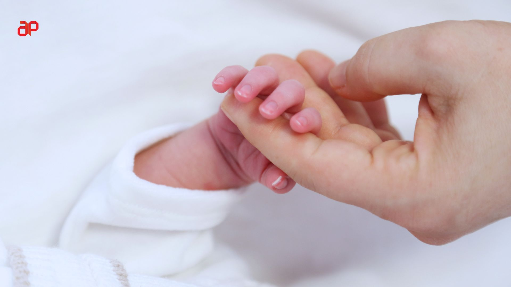

Safe, caring prenatal screening designed to support every step of your journey.
فحص آمن ومطمئن قبل الولادة، صُمم ليدعمك في كل خطوة من رحلتك.
Down Syndrome —
1 in 700–750 pregnancies.متلازمة داون —
حالة تقريباً في كل 700–750 حمل.
Edwards Syndrome —
1 in 6,000.متلازمة إدواردز —
حالة تقريباً في كل 6,000 حمل.
Patau Syndrome —
1 in 10,000–20,000.متلازمة باتاو —
حالة تقريباً في كل 10,000–20,000 حمل.
Turner, Klinefelter,
Triple X and XYY syndromes.متلازمات تيرنر وكلاينفلتر
وثلاثي X وXYY.
DiGeorge, Prader-Willi,
Angelman (extended panels).دي جورج وبرادر ويلي
وأنجلمان ضمن الباقات الموسعة.
Fetal sex determination
from Week 10.إمكانية تحديد جنس الجنين
من الأسبوع العاشر.
A simple maternal blood test that can be done as early as the 10th week of pregnancy. It provides vital insights without posing any risk to you or your developing baby.
Our non-invasive prenatal testing utilizes the latest in cell-free DNA sequencing to ensure over 99% accuracy for common chromosomal conditions, giving you peace of mind when it matters most.
NIPT can be performed from Week 10 — the earliest available prenatal genetic screening method.
Earliest WindowOptimal window — can be combined with first-trimester NT ultrasound.
Optimal WindowNIPT can be done at any gestational age.
AnytimePrenatal screening is recommended for all pregnant women regardless of age or individual risk factors. Major medical organizations such as ACOG and ACMG support prenatal screening.
Only a standard maternal blood draw of less than 5ml. No risk to the baby.
Our team ensures every patient understands scope, limitations and next steps.
Our team coordinates with OB-GYN specialists for follow-up.
Results shared only with the patient.

NIPT (Non-Invasive Prenatal Testing) is a safe and advanced screening test used early in pregnancy to check for certain genetic conditions in a baby. It works by analyzing small amounts of the baby’s DNA that are naturally found in the mother’s blood.
From Week 10 of pregnancy. Earlier testing gives earlier reassurance.
Yes — completely safe. Only a blood draw from the mother. Zero risk to the baby.
Standard screening checks Trisomy 21, 18 and 13 plus key sex chromosome conditions. Advanced options extend coverage to all 24 chromosomes and selected microdeletions.
While NIPT is very accurate for detecting the most common chromosomal abnormalities, it does not detect every possible condition. It will not pick up certain rare genetic mutations, structural issues like neural tube defects, or complications that arise later in pregnancy. It is a screening test, not a diagnostic test.
Results within 7–10 working days. Every report is reviewed before release.
Yes — optional add-on in Basic and Extended panels, from Week 10.
Yes — across Abu Dhabi. Call 02 633 3923 or WhatsApp +971 50 805 6623.

Book your NIPT today. From Week 10. No referral required. Home collection available.